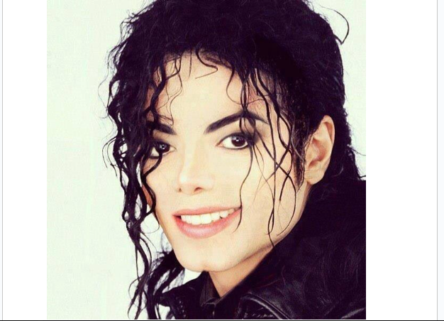

Michael Jackson
"A Tribute To The King Of Pop"
QUICK FACTS
FULL NAME
NICKNAME "kING OF POP" OCCUPATION Music Producer, Singer, Dancer, Songwritter BIRTH DATE August 29, 1958 PLACE OF BIRTH gary, Indiana, US Residence Los Olivos, California, US SPOUSE(s) Lisa Marie Presley (m.1994-1996 Divorced) Debbie Rowe (m.1996-1999 Divorced) CHILDREN 3 PARENT(S) Joes Jackson Katherine Jackson DEATH DATE June 25, 2009 PLACE OF DEATH Los Angeles, California Years active 1964-2009
Micheal Joseph Jackson
Discography-
- 1. Got to Be There (1972)
- 2. Ben(1972)
- 3. Music & Me(1973)
- 4. Forever, Micheal(1975)
- 5. Off The Wall(1979)
- 6. Thriller(1982)
- 7. bad(1987)
- 8. Dangerous(1991)
- 9. HIStory: Past, Present and Future, Book I (1995)
- 10. Invincible(2001)
After Death-
- Micheal (2010)
- Xscape(2014)
Timeline Of Micheal Jackson's life
- 1958 - Born at Gary, Indiana.
- 1964 - Joined the Jackson Brothers (Jackson 5).
- 1972 - Began his Solo Career with the album "Got to be there".
- 1979 - Released his first major solo album "Off the Wall".
- 1982 - Released the album "Thriller" (Best selling album of all time).
- 1987 - Released his album "Bad".
- 1988 - Released his only autobiography named "Moonwalk".
- 1991 - The Album "Dangerous" was released
- 1992 - Founded the Heal the World Foundation.
- 1994 - Married Lisa Marie Presley, the daughter of Elvis and Priscilla Presley.
- 1995 - Released the album " HIStory: Past, Present and Future, Book I"
- 1996 - Had a Divorce with Lisa Marie Presley and Married Deborah Jeanne Rowe.
- 1997 - Became the father of Michael Joseph Jackson Jr. (Prince Jackson).
- 1997 - Released the album "Blood on the Dance Floor: HIStory in the Mix".
- 1998 - Became the father of Paris-Michael Katherine Jackson.
- 1999 - Had a Divorce with Deborah Jeanne Rowe.
- 2001 - Released the album "Invincible"
- 2001 - Performed at "The Madison Square Garden".
- 2002 - Became the father of Prince Michael Jackson II (nicknamed "Blanket").
- 2006 - His house "Neverland Ranch" closed due to financial debts.
- 2009 - Died due to Cardiac Arrest.
After Death-
- 2009 - A documentary film about the rehearsals, Michael Jackson's This Is It, was released.
- 2010 - Sony announced the first postumous album, Michael, released on December 14.
- 2014 - Epic Records announced Xscape, an album of eight songs of unreleased material culled from past recording sessions.